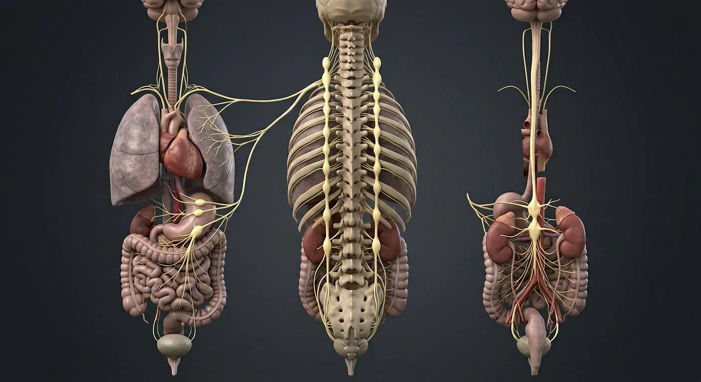

How this part of the body works
Deep dive into ganglia and plexuses: where fibres relay, which organs they reach, and what happens when the balance breaks.
Read the anatomy, part by part
These 12 structures describe anatomy related to the chapter’s regional illustration. Each entry separates location, function and a clinical point.
Sympathetic trunk
Paired chain from neck to sacrum beside vertebrae.
What it doesMass fight-or-flight discharge.
Clinical connectionChronic overdrive: hypertension, anxiety physiology.
Chain ganglion
Relay station on the trunk.
What it doesSynapse for pre→postganglionic fibres.
Clinical connectionStellate ganglion block treats refractory angina pain.
Coeliac ganglion & plexus
Largest prevertebral relay at T12/L1, around coeliac trunk.
What it doesForegut sympathetic supply.
Clinical connectionCoeliac plexus block for pancreatic cancer pain.
Superior mesenteric ganglion
Relay at the SMA origin.
What it doesMidgut sympathetic supply.
Clinical connectionMesenteric ischaemia pain is carried with these fibres.
Inferior mesenteric ganglion
Relay at IMA origin.
What it doesHindgut and pelvic sympathetic supply.
Clinical connectionInvolved in post-ejaculatory pain syndromes.
Vagus parasympathetic
Cranial parasympathetic to thorax and fore/midgut.
What it doesRest-digest: slow heart, stimulate gut.
Clinical connectionVagotomy historically cured duodenal ulcers.
Cardiac plexus
Sympathetic + vagal mesh at the aortic arch.
What it doesHeart rate and force tuning.
Clinical connectionBeta-blockers blunt its sympathetic arm.
Pulmonary plexus
Autonomic mesh at each lung root.
What it doesBronchial tone and vessel calibre.
Clinical connectionAsthma is partly autonomic imbalance here.
Enteric nervous system
100–500 million neurons in gut wall plexuses.
What it doesPeristalsis and secretion, semi-independent.
Clinical connectionHirschsprung: missing enteric ganglia in distal colon.
Pelvic splanchnic nerves
Parasympathetic outflow to pelvis.
What it doesBladder emptying, erection, defecation.
Clinical connectionSacral cord injury causes retention and impotence.
Adrenal medulla
Modified sympathetic ganglion releasing adrenaline.
What it doesHormonal fight-or-flight broadcast.
Clinical connectionPhaeochromocytoma: episodic hypertension + sweating.
Rami communicantes
White (in) and grey (out) bridges to spinal nerves.
What it doesConnect trunk to every spinal nerve.
Clinical connectionGrey rami carry postganglionic fibres back out.
Deeper structures and tissue layers
These 8 additional entries give anatomical context. They are deliberately not assigned a photographic pin on the regional image.
Superior cervical ganglion
Upper sympathetic-chain ganglion near C2–C3 levels.
What it doesSends postganglionic fibers toward head via carotid plexuses.
Clinical connectionCervical disruption can cause Horner syndrome.
Stellate ganglion
Often fused inferior cervical and first thoracic sympathetic ganglia.
What it doesContributes sympathetic supply to upper limb and neck.
Clinical connectionBlockade affects ipsilateral sympathetic tone.
Greater splanchnic nerve
Preganglionic sympathetic fibers usually from T5–T9 to celiac ganglion.
What it doesCarries thoracic visceral sympathetic outflow.
Clinical connectionNot the same as pelvic splanchnic parasympathetic nerves.
Lumbar splanchnic nerves
Sympathetic branches from lumbar trunk to prevertebral plexuses.
What it doesReach abdominal and pelvic viscera.
Clinical connectionCourse differs from somatic lumbar spinal nerves.
Inferior hypogastric plexus
Paired pelvic autonomic networks lateral to rectum, bladder and reproductive organs.
What it doesDistribute sympathetic and parasympathetic fibers to pelvic organs.
Clinical connectionPelvic surgery can damage visceral function.
Pterygopalatine ganglion
Parasympathetic relay for facial-nerve fibers carried toward lacrimal and nasal glands.
What it doesSupports glandular secretion.
Clinical connectionIts postganglionic fibers hitchhike on trigeminal branches.
Ciliary ganglion
Small orbital parasympathetic ganglion associated with oculomotor nerve.
What it doesPostganglionic fibers constrict pupil and accommodate lens.
Clinical connectionLesion can produce poorly reactive pupil.
Otic ganglion
Parasympathetic relay for glossopharyngeal fibers destined for parotid gland.
What it doesSupports parotid salivary secretion.
Clinical connectionAuriculotemporal V3 carries postganglionic fibers onward.
Five questions about Autonomic nervous system
Short answers grounded in the structures described above. Use the illustrated guide for anatomical context.
What is the difference between sympathetic and parasympathetic nerves?
Both are autonomic pathways. Sympathetic activity often prepares organs for exertion; parasympathetic pathways support many resting functions. Their effects depend on the organ and receptor.
Where are autonomic ganglia located?
Sympathetic ganglia lie in chains beside the spine or in prevertebral groups; many parasympathetic ganglia lie near or within their target organs.
What is the sympathetic trunk?
Paired chain from neck to sacrum beside vertebrae. Function: Mass fight-or-flight discharge.
Where is the coeliac ganglion & plexus located?
Largest prevertebral relay at T12/L1, around coeliac trunk. Function: Foregut sympathetic supply.
What is the function of the inferior mesenteric ganglion?
Function: Hindgut and pelvic sympathetic supply. Relay at IMA origin.
Related anatomy guides
Follow these connected structures and body systems in the illustrated atlas.
 Nervous system — overviewOne continuous network: the brain and spinal cord compute, and 43 pairs of peripheral nerves carry orders out and reports back.↗
Nervous system — overviewOne continuous network: the brain and spinal cord compute, and 43 pairs of peripheral nerves carry orders out and reports back.↗ Stomach & intestinesThe gastrointestinal tract from oesophagus to rectum, with the villus that does the absorbing.↗
Stomach & intestinesThe gastrointestinal tract from oesophagus to rectum, with the villus that does the absorbing.↗ HeartA four-chambered muscular pump with four valves and its own electrical conduction system.↗
HeartA four-chambered muscular pump with four valves and its own electrical conduction system.↗Further reading
General anatomy references and related source chapters for continued study. These links do not make the digital illustrations clinical images or certify every anatomical variant.
This educational page is not medical advice and has not undergone formal clinical peer review. Spotted an error? Contact the editor.
Open the realistic interactive plate, label lines, focus view and self-test.